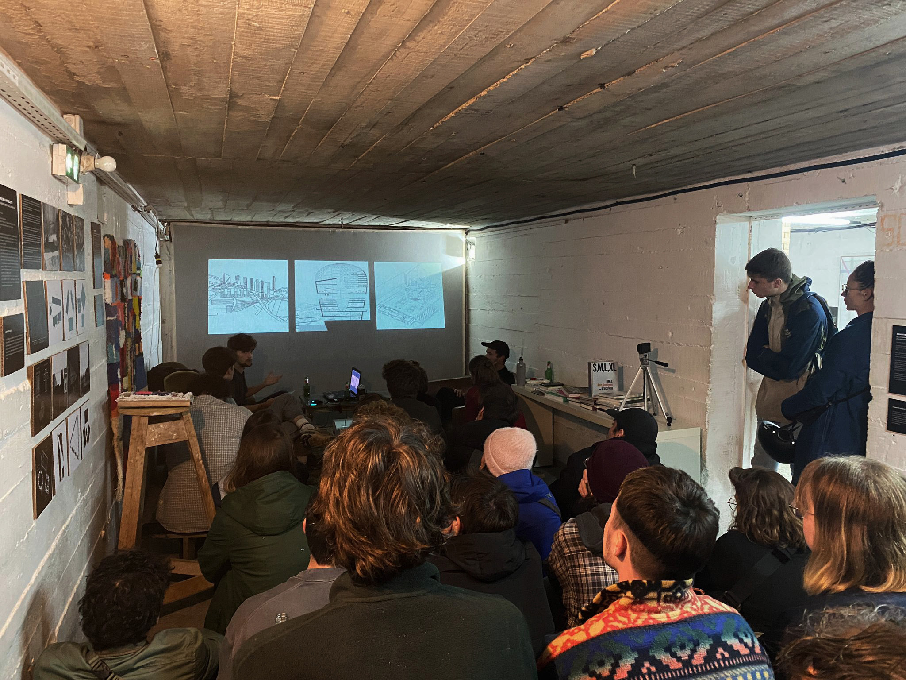

ASAP
1 (anglais) as soon as possible: le plus tôt possible
2 album des super-jeunes architectes et paysagistes
ASAP est une association de jeunes architectes qui s’intéressent à la production de théorie architecturale et à la possibilité d’une autodétermination de la discipline. ASAP revendique l’architecture comme sujet à étudier et non comme outil d’analyse des autres forces à l’œuvre dans et autour de la production de forme bâties. Pour cela ASAP refuse le rigorisme académique, son approche du champ de compétence de l’architecture est plurielle et détournée. On pourrait reprendre comme mantra pour ASAP l’envolée lyrique de Bruno Zevi :
«Il nous vient le désir d’abandonner ces thèmes froidement raisonneurs et ces lunettes intellectuelles et prêcher seulement la haine et l’amour : une critique partiale, développée d’une point de vue strictement personnel, mais au moins d’un point de vue comme disait Baudelaire, qui ouvre les horizons. Et l’on préfère alors retourner à quelque antique historien, à quelque pragmatique ignare, au jugement confus mais passionné, vibrant au moins avec l’œuvre d’art, capable d’une exclamation sincère, ou d’une intuition illuminée. Plutôt que l’exactitude théorique mieux vaut l’énergie du tempérament critique qui a au moins la modestie de sentir.»
Bruno Zevi, Apprendre à voir l'architecture, 1959
ASAP défend la pratique de la théorie qui, à l'inverse de la recherche, n'a a satisfaire aucun protocole ni ne doit se livrer dans aucune forme prédéterminés. Sa seule mission et son seul critère d'évaluation par la communauté des pairs est l'opérance des concepts qu'elle produit. A l'inverse de la recherche qui doit être réfutable et donc s'inscrire dans le régime de discours descriptif, la théorie produit des énoncés performatifs. Autrement dit, l’efficacité d’une proposition théorique – prenant la forme de textes, d’images ou de diagrammes – est jugée non pas par rapport à sa scientificité ou sa véracité mais vis-à-vis de son usage dans le champ de la pratique et in fine du projet : de sa capacité à influer sur le réel.
« Basiquement je pense que je peux faire de l’architecture comme un journaliste, et une des choses les plus intéressantes par rapport au journalisme est que c’est une profession sans discipline associée.
Le journalisme est simplement un régime de curiosité applicable à tout sujet ».
Propos de Rem Koolhaas, à l'occasion d'une conversation avec Peter Eisenmann, modérée par Brett Steele en 2006, dans architecture words 1 : Supercritical, 2009
A la manière de l'architecte-journaliste de Koolhaas, ASAP cherche à désacraliser la théorie en la considérent comme le reste outils plus communément utilisés par le corps des architectes : analyse de site, relevé contextuel, enquête, synthèse programmatique ou expérimentation de matériaux et de systèmes constructifs. Pourtant, si les outils ‘‘ordinaires” du praticien sont compris comme des savoir-faire apprenables et reproductibles par tous et toutes, moyennant travail, la production théorique reste souvent vue comme une intuition innée impulsée par l’idée d’un.e auteur.e particulièrement inspiré.e.
C'est contre cette croyance, qui voudrait doter le théore de qualités immanentes, que se construit ASAP. Nous affirmons que l'auteur est un producteur, un travailleur qui se forme à son art et qui applique des méthodes que d'autres l'ont aidé à maitriser pour créer un objet intellectuel final qu'il livre au monde.
L'ensemble des évènements organisés par ASAP, qu'ils prennent place dans les écoles, dans les instances de diffusion de la culture architecturale, ou dans les lieux d'exercice quotidien du travail de maitrise d'oeuvre, visent ainsi tous à participer à l'auto-formation populaire d'une nouvelle génération d'architectes-théoriciens. Au travers d'articles, d'expositions ou de soirées débats, cette association cherche à rassembler toutes celles et ceux qui souhaitent réfléchir ensemble à ce curieux sujet auquel tout régime d’investigation est applicable.
→ Lire le manifeste d'ASAP en entier